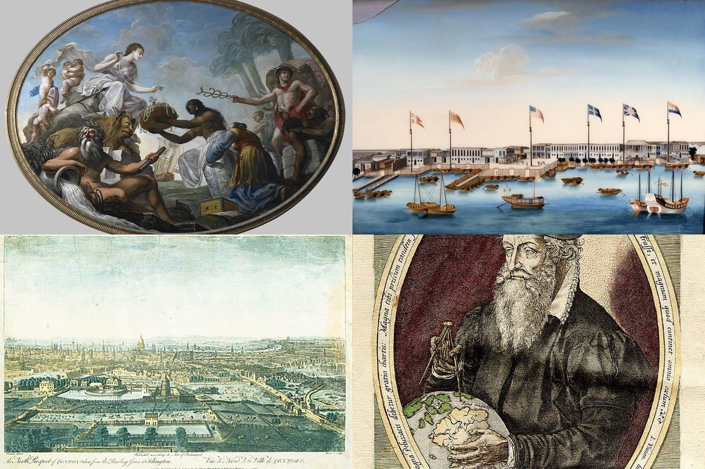
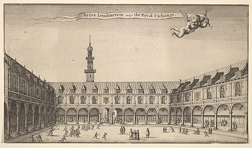
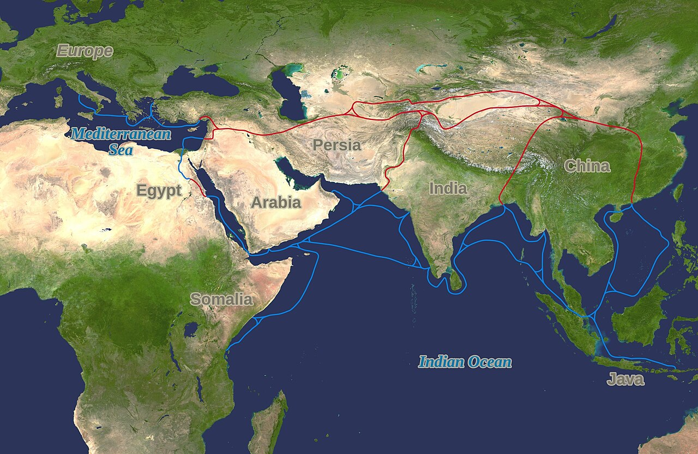
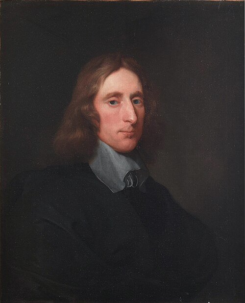
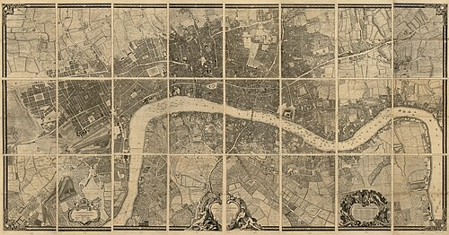

KS3: Early Modern World & Global Encounters (1450–1750)

KS3: Early Modern World & Global Encounters (1450–1750)
Student Workbook
Name:
Class:
The East Offering its Riches to Britannia (1778)An allegorical painting showing Britannia receiving jewels, spices, and silk from Asia, Africa, and India. It highlights the ideology and wealth of the empire.
Foreign Trading Factories at Canton (Guangzhou)The highly regulated district in Qing China where European companies operated, proving that Asian empires held immense global economic power.

The Financial Hub of LondonA view of the Royal Exchange. By 1750, London was crowded with merchant ships and transformed into the financial center of global maritime trade.
Nautical Planisphere World MapEarly modern maps revolutionized travel, showing the massive ocean trade routes and the terrifying scale of global exploration.
Identify the major global powers and trading hubs in the year 1450.
Explain how the Ottoman Empire and West African kingdoms controlled global wealth.
Evaluate why Western Europe was on the periphery (edges) of world trade in 1450.
Do Now Activity
Score: / 1
1. Look at the four images on the front cover of your workbook. What connections can you draw between them? How do they show that the world was becoming more connected?
In May 1453, a Venetian merchant named Niccolò Barbaro stood on the stone ramparts of Constantinople, watching in terror as massive iron cannonballs shattered the thickest walls in Christendom.
For over a thousand years, the Byzantine Empire had stood as Europe’s great eastern shield. But the army outside the walls was not European—it was the military machine of 21-year-old Sultan Mehmed II of the Ottoman Empire. When Constantinople fell on 29 May 1453, Mehmed did not destroy the city; he renamed it Istanbul, transformed it into the jewel of the Islamic world, and took control of the ultimate prize: the vital crossroads connecting European trade to Asia.
🌍 Western Europe (Desperate for Spices)
Blocked by Ottomans ❌
🐪 The Silk Road (Vast Global Wealth)
For merchants in London, Paris, or Venice, this was catastrophic. Europe did not rule the world in 1450. In fact, if a traveler from another planet had visited Earth in the 15th century, Western Europe would have looked like an isolated, impoverished backwater compared to the colossal wealth of Asia and Africa.
Q1. Why was the fall of Constantinople catastrophic for merchants in Western Europe?
Source A: View of the Thirteen Factories in Canton
Before 1750, European powers did not dominate the world. The true economic superpowers were Asian empires like Qing China and Mughal India. European merchants were desperate to access the silk, tea, and porcelain of China, but the Chinese Emperor severely restricted their access. European traders were forced to live and work in small, heavily regulated zones on the edge of the Pearl River in Canton, closely watched by Chinese authorities.
Q2. Based on Source A, how does the reality of the Thirteen Factories in Canton challenge the idea that Europeans dominated global trade in the 1700s?
Source A: Fresco depicting the Siege of Constantinople in 1453
The Ottoman Empire: The Gatekeeper of the East By 1450, the Ottoman Empire had built a dominant superpower spanning Southeastern Europe, Western Asia, and North Africa. By holding Istanbul, Sultan Mehmed II controlled the land routes of the Silk Road.
If an English noble wanted luxury silk, porcelain from Ming Dynasty China, or pepper from India, it had to pass through Ottoman territory. The Sultan slapped heavy taxes on all European merchants. Western Europe was effectively locked out of direct trade with Asia, forced to pay whatever prices the Ottomans demanded.
Source B: 15th-Century Benin Bronze Relief Plaque
Far to the south, sub-Saharan Africa boasted civilizations whose wealth rivaled anything in Europe.
The Kingdom of Benin (Edo Empire): In modern-day Nigeria, the Oba (King) of Benin ruled a sprawling, highly organized state protected by thousands of miles of earthwork walls—structures larger than the Great Wall of China. Benin’s craftsmen produced world-famous bronze relief sculptures using the complex lost-wax casting technique, depicting a sophisticated courtly culture.
The Empire of Mali: Built on vast trans-Saharan trade routes, Mali was world-renowned for its gold reserves. Just a century earlier, Mali’s emperor, Mansa Musa, made a pilgrimage to Mecca carrying so much gold that he gave it away in Cairo, causing hyperinflation and knocking down the value of gold across the Middle East for a decade.

Source C: The Silk Road Trade Routes Map
At the far eastern end of the globe lay Ming Dynasty China, home to roughly 100 million people. China was the economic powerhouse of the world:
They invented gunpowder, paper money, the magnetic compass, and printing presses centuries before Europe.
Between 1405 and 1433, Admiral Zheng He commanded a massive imperial fleet of "treasure ships"—vessels five times larger than Christopher Columbus’s Santa Maria—exploring the Indian Ocean and trading as far as East Africa.
Source D: An Eyewitness Account of Sultan Mehmed II entering Constantinople (1453) "The Sultan entered the city with great pomp... He inspected the great church of Hagia Sophia and commanded that it immediately be converted into a mosque. His armies were disciplined, his power absolute, and the rulers of Europe quaked with fear at his name." — Kritovoulos of Imbros, a Greek scholar writing in 1454.
Source E: A European Description of the Wealth of West Africa "In this land there is so much gold that the King’s horses wear bridles made of pure gold... The merchants of Cairo, Venice, and Genoa travel across the burning sands of the desert just to buy a fraction of their wealth." — Adapted from the Catalan Atlas, created in Majorca, 1375.
Q3. What impression do Sources D and E give about the balance of power between Europe and the rest of the world in the 15th century?
For generations, older history textbooks began modern world history with European explorers "discovering" the globe after 1492. Modern historians heavily challenge this traditional view:
Historian Perspective: Professor Peter Frankopan (The Silk Roads, 2015) "For thousands of years, the pulse of the earth beat not in Europe, but along the Silk Roads... Europe was an outpost, a small region on the edge of the great continent of Eurasia. In 1450, the true wealth, science, and military power of the world lay firmly in the East and in Africa."
Why does this matter? Understanding 1450 changes how we view the rest of world history. Western Europe did not launch voyages of exploration in the late 1400s because they were superior; they did it out of desperation. Trapped by the Ottoman Empire and desperate for African gold and Asian spices, Europeans were forced onto the dangerous Atlantic Ocean to find a new route to the riches of the East.
Q4. Class Debate: Based on Professor Frankopan's argument, why might traditional European textbooks have deliberately ignored the wealth of the East in 1450?
Q5. Synoptic Reflection: Based on what you have learned today, how 'modern' was the world outside of Europe in 1450 compared to Europe?
While the Oba of Benin commissioned magnificent bronze plaques and Ming Emperors wore silk, the vast majority of people in 1450 England were destitute peasant farmers. An ordinary English peasant lived in a dark, smokey, single-room wattle-and-daub hut shared with their livestock. Their diet was incredibly monotonous, consisting almost entirely of 'pottage'—a thick, bland stew of boiled cabbage, peas, and oats. They rarely travelled more than five miles from their birthplace and were completely oblivious to the vast riches flowing through the Silk Road or the trans-Saharan trade networks. Europe in 1450 was not the center of the world; for the average peasant, it was a cold, isolated struggle for survival.
Q6. What was the main diet of an ordinary English peasant in 1450?
Q7. How does this peasant's life contrast with the wealth of the Oba of Benin or the Ming Emperor?
Q8. Why does this evidence support the idea that Europe was an 'isolated outpost' in 1450?
Q9. Study Source D. How does this visual source support the idea that everyday life for a peasant was a brutal struggle?
Documentary / General Notes
Title / Topic: ______________________________________________________________
How did religious conflict trigger global exploration (1517–1588)?
Learning Objectives
Explain how the Protestant Reformation shattered European unity after 1517.
Analyze the role of Elizabethan privateers in challenging Catholic Spain's global monopoly.
Evaluate how the Spanish Armada (1588) marked a turning point in Britain’s imperial ambitions.
Do Now Activity
Score: / 5
1. What was the overarching name for the ancient trade network connecting Asia to Europe?
2. Which major empire expanded to block overland European trade routes in 1453?
3. What city was captured by Sultan Mehmed II in 1453?
4. What West African kingdom was known for its detailed bronze plaques in the 15th century?
5. Why did the capture of Constantinople force European nations to look for new trade routes?
Vocabulary Check
Style: Vocabulary Mapping
Write a historically accurate sentence connecting two terms from the glossary box below.
Reformation | Privateer | Armada | Monopoly | Indulgences
Your Sentence:
Source A: Portrait of Sir Francis Drake
On the muggy morning of 23 September 1568, off the coast of modern-day Mexico, a young English sea captain named Francis Drake listened to the thunder of Spanish naval cannons shattering his fleet.
Drake and his cousin, John Hawkins, had sailed into the Spanish port of San Juan de Ulúa to repair their battered ships. Spain claimed exclusive control over the entire Americas by papal decree—no Protestant English ships were legally allowed to trade or anchor in these waters. Despite a written truce signed by the Spanish Viceroy, Spanish warships ambushed the small English squadron.
Drake barely escaped aboard his small ship, the Judith, leaving behind dozens of English sailors to be captured, interrogated, or executed by the Spanish Inquisition.
Drake did not view this ambush merely as a commercial dispute. To him, it was a holy war. He vowed personal revenge against King Philip II of Spain and the Catholic Church. For the next twenty years, Drake’s personal quest for vengeance would turn the Atlantic Ocean into a global battlefield, transforming England from a weak island nation into an aggressive maritime power.
Q1. Why did the Spanish attack Francis Drake and John Hawkins at San Juan de Ulúa despite having signed a truce?
Source B: Mercator World Map 1569
Driven by religious competition and a desperate need for resources, European sailors began charting the massive, terrifying unknown of the global oceans. Mapmakers like Gerardus Mercator developed revolutionary new map projections that helped sailors navigate the vast distances of the Atlantic and Pacific, shrinking the world and connecting isolated continents for the first time.
Source B: Martin Luther holding the Bible
The Reformation Shatters Europe (1517) To understand why Drake was fighting in Mexico, we have to look back to Germany in 1517. A monk named Martin Luther nailed his 95 Theses to a church door, protesting corrupt practices in the Catholic Church—specifically the sale of "indulgences" (paying money to buy forgiveness for sins).
Luther’s protest ignited the Protestant Reformation. Europe fractured into two hostile religious camps:
Catholic Powers: Led by the wealthy Spanish Empire and the Pope in Rome.
Protestant Powers: Small German states, the Netherlands, and eventually England after Henry VIII broke away from Rome in 1534.
Source C: Map showing the Treaty of Tordesillas line
The New World Monopoly and the Papal Bull In 1494, Pope Alexander VI issued the Treaty of Tordesillas, drawing an imaginary line down the Atlantic Ocean. The Pope declared that all newly discovered lands to the west belonged exclusively to Catholic Spain, while lands to the east belonged to Catholic Portugal.
By 1550, gold and silver fleets were pouring out of South America, funding King Philip II’s armies in Europe. Catholic Spain claimed a complete monopoly over global trade.
Protestant Privateers: Pirates with a Royal License When Protestant Queen Elizabeth I took the English throne in 1558, England was financially weak and lacked a large navy. Elizabeth could not afford a direct war against Spain. Instead, she used privateers.
A privateer was an armed merchant captain given a official letter of license—a Letter of Marque—by the monarch. This document allowed them to attack and plunder enemy ships legally during wartime. To the Spanish, privateers like Francis Drake, Walter Raleigh, and John Hawkins were illegal pirates (el Draque, "The Dragon"). To Elizabeth, they were cheap, effective freedom fighters who brought massive wealth back to London.
Between 1577 and 1580, Drake sailed around the world on his ship, the Golden Hind. He raided Spanish ports along the Pacific coast of South America, captured the Spanish treasure galleon Cacafuego carrying 26 tons of silver, and claimed land in California ("New Albion") for Elizabeth. When he returned, Elizabeth knighted him on the deck of his ship—a direct insult to King Philip II.
Q2. How did Queen Elizabeth I use privateers as a strategic tool against Spain?
Furious at English privateering, Elizabeth's support for Protestant rebels in the Netherlands, and the execution of the Catholic Mary, Queen of Scots, King Philip II decided to invade England.
In May 1588, Philip launched the Spanish Armada: 130 warships carrying 30,000 soldiers designed to overthrow Elizabeth and force England back to Catholicism.
The English navy, using smaller, faster ships equipped with long-range cannons, harassed the Armada up the English Channel. Off Calais, the English unleashed drifting fire ships (vessels packed with pitch and gunpowder set ablaze), forcing the panicked Spanish ships to cut their anchors and scatter. A disastrous storm—termed the "Protestant Wind"—blew the remaining Spanish fleet around the rocky coasts of Scotland and Ireland, destroying over half their ships.
Q3. Describe the two main reasons the Spanish Armada failed to invade England.
Source D: An Excerpt from Queen Elizabeth I's Speech at Tilbury (August 1588) "I know I have the body of a weak and feeble woman; but I have the heart and stomach of a king, and of a king of England too, and think foul scorn that Parma or Spain, or any prince of Europe, should dare to invade the borders of my realm... We shall shortly have a famous victory over these enemies of my God, of my kingdom, and of my people."
Source E: A Spanish Catholic Account of English Privateers (1579) "This Francisco Drake is a thief, a heretic, and a minister of the Devil. He robs churches, desecrates holy images, and steals the treasure that belongs by divine right to His Catholic Majesty King Philip. He does not fight for trade; he fights to destroy the Holy Mother Church." — Adapted from a letter by Don Francisco de Zárate, a Spanish captain captured by Drake.
Q4. How does the author’s perspective in Source E differ from Source D regarding Francis Drake's motives?
Q5. Why does Elizabeth refer to the Spanish Armada as 'enemies of my God' in Source D?
Q6. How useful is Source E to a historian studying Spanish attitudes toward English exploration in the 16th century?
Source F: The Armada Portrait of Queen Elizabeth I
Look closely at The Armada Portrait painted shortly after the defeat of the Spanish fleet:
The Right Hand on the Globe: Elizabeth’s hand rests directly over North America, signaling England's intent to challenge Catholic Spain for global empire.
The Background Windows: The left window shows the calm English fleet; the right window shows the shattered Spanish Armada crashing against rocky shores in a storm.
The Mermaid: A carved mermaid on the imperial chair symbolizes the English control of the seas and the temptation/destruction of foreign fleets.
Q7. What message was the artist of the Armada Portrait trying to convey about England's future?
Historian Perspective A: Traditional View (19th Century) "The defeat of the Armada was a miraculous victory for Protestantism and freedom. God sent a divine storm to scatter the Catholic tyrant’s fleet, paving the way for the rise of the British Empire."
Historian Perspective B: Revisionist View (Dr. Geoffrey Parker, 2013) "Philip II’s invasion failed due to structural flaws: poor communications between Spain and the Netherlands, rigid tactics, and terrible naval logistics. The 'Protestant Wind' simply finished off a fleet that had already been outmaneuvered by superior English ship design and artillery."
Q8. How does the revisionist view (Perspective B) challenge the traditional view (Perspective A) of the Armada's defeat?
Q9. Synoptic Reflection: Identify one piece of evidence from this lesson that shows England becoming more 'modern' and globally powerful.
⚔️ Side Quest: The Horrors of Scurvy
Source G: Historical medical documentation illustrating the horrifying effects of scurvy on a sailor's gums and teeth.
The 'Golden Age of Exploration' is often painted as a heroic era of brave captains claiming glory. But for the ordinary sailors on ships like Francis Drake's Golden Hind, life was a living nightmare of disease and malnutrition. The greatest enemy was not the Spanish navy, but scurvy—a terrifying disease caused by a severe lack of Vitamin C on long voyages. Because fresh fruit spoiled quickly, sailors survived on rock-hard, maggot-infested biscuits and salted beef that had often turned green. Without Vitamin C, a sailor's gums would swell and rot, their teeth would fall out, old wounds would miraculously rip open again, and they would slowly bleed to death internally. On many Elizabethan voyages, more than half the crew died of scurvy before ever seeing combat.
Q10. What was the primary cause of scurvy on long oceanic voyages?
Q11. Describe two horrifying physical symptoms of scurvy experienced by Tudor sailors.
Q12. Why might history textbooks prefer to focus on the 'glory' of Francis Drake rather than the reality of scurvy?
Q13. Study Source G. Based on this visual evidence, what physical impact did scurvy have on the human body?
Documentary / General Notes
Title / Topic: ______________________________________________________________
Trade or takeover: How did early encounters turn into empire?
Learning Objectives
Explain how joint-stock corporations (like the East India Company and Virginia Company) funded early English expansion.
Compare the early English colonial encounters in North America (Roanoke and Jamestown) with mercantile trade in Mughal India.
Evaluate the turning point where peaceful commercial trade shifted into territorial takeover and subjugation.
Do Now Activity
Score: / 5
1. In what year did Martin Luther post his 95 Theses?
2. What name was given to English sailors, like Francis Drake, who were given legal permission to attack Spanish ships?
3. What was the name of the Spanish King who launched the Armada against England in 1588?
4. What weather event destroyed much of the fleeing Spanish Armada off the coast of Scotland?
5. Why did Queen Elizabeth I use privateers instead of the Royal Navy to challenge Spain in the Americas?
Vocabulary Check
Style: Mini-Frayer Model
Complete the Frayer Model for the term: Joint-Stock Company
Definition
Historical Example
Non-Example / Sketch
Your own sentence
Source A: Engraving of Pocahontas in English attire
In the winter of 1616, a 21-year-old Algonquin woman named Matoaka—popularly known as Pocahontas—arrived at the court of King James I in London.
She was dressed not in the traditional deer skins of her Powhatan homeland in North America, but in heavy English velvet, lace ruffles, and a tall felt hat. Rechristened "Rebecca Rolfe" following her conversion to Christianity and marriage to English tobacco planter John Rolfe, she was brought to England by the Virginia Company as a living advertisement.
To the rich investors of London, Matoaka was proof that native populations in the "New World" could be tamed, converted, and integrated into a profitable English empire. But the reality back in North America was far grim. Matoaka had been kidnapped three years earlier by English colonists during a bloody border war. Within months of her court appearance in London, as she boarded a ship to return home, she fell ill and died at Gravesend on the River Thames.
Matoaka’s tragic life encapsulated the reality of early British expansion: what began as desperate, fragile trade encounters between unequal powers rapidly hardened into violent land seizures and permanent imperial domination.
Q1. Why was Matoaka brought to the court of King James I in London?
Source B: Sir Thomas Roe at Mughal Court
Unlike Catholic Spain, where the King directly funded conquistadors and royal armies, early English expansion was driven by private enterprise and capitalism.
The English Crown was too poor to fund risky overseas voyages. Instead, wealthy merchants formed Joint-Stock Companies. Multiple investors pooled their capital to buy shares in a trading venture. If a ship sank or a colony failed, no single merchant was ruined; if it succeeded, the profits were divided proportional to their shares.
The American Frontier: From Lost Colony to Cash Crop In the 1580s, Sir Walter Raleigh organized the first English attempt to colonize North America on Roanoke Island (modern-day North Carolina). It ended in total failure. When supply ships returned in 1590, the entire colony of 115 men, women, and children had vanished, leaving behind only the single word carved into a wooden post: "CROATOAN".
Undeterred, the Virginia Company launched a new venture in 1607, founding Jamestown. The early years were disastrous:
The Starving Time (1609–1610): Over 80% of the settlers died of dysentery, malaria, and starvation.
The Powhatan Confederacy: The local indigenous population, led by Chief Powhatan, initially kept the inept English alive by trading maize.
Tobacco Saved the Colony: In 1612, John Rolfe introduced a sweet Caribbean tobacco strain. Tobacco became Virginia’s "green gold."
To grow tobacco at scale, the colonists needed vast land and cheap labor. The English abandoned peaceful trade with the Powhatan and launched aggressive land seizures, sparking decades of brutal warfare.
Mughal India: Bowing Before the Peacock Throne While the English were seizing land in America, their presence in Asia looked completely different.
In 1600, Queen Elizabeth I granted a royal charter to the Governor and Company of Merchants of London Trading into the East Indies—better known as the East India Company (EIC). When EIC merchant ships arrived in India, they encountered the vast Mughal Empire, ruled by Emperor Jahangir.
The Mughal Empire held 25% of world GDP, possessed massive armies, and produced the world's finest cotton textiles. The English could not conquer India by force.
In 1615, King James I sent diplomat Sir Thomas Roe to Jahangir’s court. Roe spent three years bowing before the Emperor, offering bribes and gifts, and begging for a firman (imperial decree) allowing the EIC to build fortified trading posts (factories) along the coast. For 150 years, the EIC remained humble traders paying taxes to the Mughals. But as Mughal central power began to fracture in the early 1700s, the EIC transformed its private corporate security guards into a ruthless private army—laying the groundwork for the total military conquest of India.
Q2. How did the funding of early English colonial expansion differ from the Spanish model?
Source C: From the First Charter of the Virginia Company (1606) "We greatly commend their desires for the furtherance of so noble a work, which may, by the Providence of Almighty God, hereafter tend to the Glory of His Divine Majesty, in propagating of Christian Religion to such People as yet live in Ignorance and miserable Barbarism, and may in time bring the infidels and savages living in those parts to human civility..."
Source D: From the Journal of Sir Thomas Roe at the Mughal Court (1616) "The Emperor Jahangir hath rich carpets, thrones of solid gold, and jewels beyond counting. He treats our King’s letters with polite indifference, viewing us as small traders from a cold, poor island... He cares nothing for our goods, save for clockwork toys and English hunting dogs, but he permits us to trade so long as we pay our taxes and remain obedient subjects."
Q3. What was the primary motivation stated in Source C for colonizing Virginia, and why might the Virginia Company emphasize religious duty over profit?
Q4. Using Source D, explain why the East India Company was forced to act politely toward Mughal rulers in 1616, whereas English settlers in Virginia acted aggressively toward Native Americans.
Q5. Which source is more useful to a historian studying the economic motivations behind early British overseas expansion?
Source E: Map plan of the triangular James Fort in Virginia, 1607
Examine the 1607 architectural plan of James Fort in Virginia:
The Triangular Shape: Designed for maximum defense with minimal men. A cannon bastioned at each of the three corners provided 360-degree crossfire.
River Orientation: The fort sat directly on the James River, allowing quick escape or resupply by sea, but surrounded by stagnant marshland filled with malarial mosquitoes.
Palisade Walls: High wooden walls built from felled timber shielded the storehouses and chapel, turning the settlement into an armed military outpost rather than a peaceful civilian farm.
Q6. What does the design of the Jamestown Fort suggest about the relationship between the English settlers and the local indigenous population?
Historian Perspective A: Sir John Seeley (The Expansion of England, 1883) "We seem, as it were, to have conquered and peopled half the world in a fit of absence of mind... The British Empire was not planned by kings or generals; it grew organically through small merchants, traders, and adventurers seeking honest commercial trade."
Historian Perspective B: Professor Shashi Tharoor (Inglorious Empire, 2017) "There was nothing 'accidental' about the corporate greed of the East India Company or the Virginia Company. From their inception, joint-stock corporations were designed with royal backing to extract wealth, monopolize global trade, and subjugate local populations whenever commercial trade turned into territorial opportunity."
Q7. How do Perspective A and Perspective B disagree on the origins of the British Empire?
Q8. Synoptic Reflection: How did joint-stock capitalism make England's economy more 'modern', but also more ruthless?
⚔️ Side Quest: The Invasion of the Pigs
Source F: John White's authentic 1585 watercolor painting of the Algonquian village of Secotan, showing their carefully managed, unfenced corn fields.
When textbooks talk about the English colonization of North America, they focus on guns, land treaties, and tobacco. But one of the most destructive weapons the English brought to Jamestown was the common pig. The Algonquian Powhatan people did not use fences; they carefully managed open forests and planted complex, exposed fields of corn, beans, and squash. The English, however, let their livestock roam wild. Hundreds of English pigs invaded the forests, devouring the natives' crops, destroying the roots of native plants, and wrecking the delicate ecological balance that the Powhatan relied on for survival. For the Indigenous people, the English were not just a military threat; they were an ecological disaster that literally ate the local food supply.
Q9. How did Algonquian farming methods differ from English ones?
Q10. Explain how free-roaming English pigs became a weapon of ecological destruction.
Q11. How does this 'ground-up' detail change our understanding of why Native Americans became hostile to the Jamestown settlers?
Q12. Study Source F. What does this watercolor tell us about how the Algonquian Powhatan organized their agriculture?
Documentary / General Notes
Title / Topic: ______________________________________________________________
Who controlled Britain: The King, Parliament, or Imperial Profits?
Learning Objectives
Analyze why Charles I and Parliament fought the English Civil War (1642–1651).
Evaluate how colonial wealth from sugar and tobacco reshaped British politics during the Commonwealth.
Debate who held true power in Britain by 1660: the Monarchy, Parliament, or Atlantic Capitalists.
Do Now Activity
Score: / 5
1. What was the name of the first permanent English settlement in North America (1607)?
2. Which cash crop saved the Jamestown colony from economic ruin?
3. What type of business model was the East India Company (EIC), where multiple investors pooled money?
4. Which powerful Asian empire did Sir Thomas Roe visit in 1615?
5. Why were the English submissive traders in India, but aggressive conquerors in North America?
Vocabulary Check
Style: Vocabulary in Context
Write a short paragraph using at least FOUR of the vocabulary words below correctly.
Divine Right of Kings | New Model Army | Commonwealth | Plantation | Navigation Acts
Source A: Engraving of the execution of King Charles I
At 2:00 PM on Tuesday, 30 January 1649, a man in a black velvet coat stepped out of a window of the Banqueting House in Whitehall, London, onto a wooden scaffold draped in black cloth.
The man was King Charles I. Below him stood thousands of silent onlookers, surrounded by ranks of iron-armored cavalry. For seven years, England had been ripped apart by a bloody Civil War that cost the lives of nearly 200,000 people—a higher proportion of the population than died in the First World War.
Charles put his head on the wooden block. He stretched out his hands—the prearranged signal—and the masked executioner’s axe severed his head with a single blow. The executioner held the dripping head aloft and shouted: "Behold the head of a traitor!"
A collective groan echoed through the crowd. Never before in European history had a monarch been put on trial, condemned, and executed by his own Parliament.
But who was really pulling the strings? Was this victory brought about by high-minded Parliamentary ideals of liberty? Or was it secretly fueled by a new class of ultra-rich Atlantic merchants whose sugar and tobacco profits were reshaping the British state?
Q1. Why was the execution of King Charles I such a shocking event in European history?
To understand this chaotic era, we must investigate three competing forces battling for the soul—and wealth—of Britain.
THE CROWN (Charles I) "Divine Right of Kings"
PARLIAMENT "Godly Governance & Rights"
VS
ATLANTIC MERCHANTS "Sugar, Tobacco & Empire"
Contender 1: The King & "Divine Right" (Charles I)
Charles I believed in the Divine Right of Kings—the conviction that God alone chose monarchs to rule, making royal authority absolute.
The Spark: Between 1629 and 1640, Charles ruled without calling Parliament at all (The Eleven Years' Tyranny). To raise money without Parliament's consent, he forced illegal taxes on the nation, such as Ship Money.
The Explosion: When Charles marched into the House of Commons with 400 armed soldiers in 1642 to arrest five MP leaders, Parliament revolted. War broke out: Royalists (Cavaliers) supporting the King vs. Parliamentarians (Roundheads) fighting for parliamentary consent.
Contender 2: Parliament & Oliver Cromwell’s New Model Army
Parliament won the Civil War not because of noble speeches, but because of a revolutionary military machine: The New Model Army.
Led by a strict Puritan country gentleman named Oliver Cromwell, this army was built on merit rather than noble birth. Soldiers sang religious psalms as they charged into battle at Naseby (1645) and Preston (1648).
When Charles I was executed in 1649, monarchy was abolished. Britain was declared a republic: The Commonwealth of England. By 1653, Cromwell dismissed Parliament at swordpoint, taking total power as Lord Protector—a military dictator who banned Christmas, theater, and sports.
Contender 3: The Atlantic Merchant Elite
While Royalists and Roundheads were hacking each other to pieces on English battlefields, a silent economic revolution was happening in the Caribbean and North America.
In the 1640s, English planters in Barbados transformed the island from tobacco farming to mass sugar plantation production powered by enslaved African labor. Sugar was nicknamed "white gold."
A single acre of Barbados sugar produced ten times more profit than an acre of English wheat.
By 1650, Barbados generated more export wealth than all the North American colonies combined.
The Hidden Link: The merchants who grew rich off Caribbean sugar and Virginian tobacco were almost all ardent supporters of Parliament. They hated Charles I because his royal monopolies interfered with their free trade. They poured millions into funding Cromwell’s New Model Army.
When Cromwell took power, he used their money to build the Commonwealth Navy and passed the Navigation Acts (1651)—laws stating that all colonial goods had to be carried on English ships, effectively seizing global trade from the Dutch!
Q2. How did the Atlantic Merchants use their wealth to influence the outcome of the English Civil War?
Source C: The Royal Exchange in London
By the 1700s, the geography of wealth in Britain had fundamentally changed. London was no longer just the seat of the King; it had become the beating heart of a new global financial empire. The River Thames was choked with a forest of wooden ship masts from the East India Company and transatlantic slave ships. The wealth generated by this massive maritime trade built institutions like the Bank of England and the Royal Exchange, shifting power from the monarchy to the merchant class.
Q3. How did the visual appearance of London change as it became a global financial hub?
Work like a professional historian. Examine these three rare primary sources from the 1640s and 1650s to identify where the true power lay.
Source B: The Charge Against King Charles I (Read at his Trial, January 1649) "That the said Charles Stuart, being admitted King of England, and therein trusted with a limited power to govern by and according to the laws of the land... hath traitorously and maliciously levied war against the present Parliament and the people therein represented... for the erecting and upholding to himself of an unlimited and tyrannical power." — John Bradshaw, President of the High Court of Justice.
Source C: A London Merchant’s Pamphlet on Sugar Profits (1654) "This small island of Barbados doth yield more wealth to the Commonwealth than any kingdom in Europe... Our ships return laden with sweetness, paying thousands in customs to the state, and maintaining hundreds of brave sailors. Without the trade of the West Indies, the New Model Army would starve for want of pay." — Adapted from a pamphlet by Martin Noell, London merchant and slave trader.
Source D: Oliver Cromwell’s Speech Dismissing the Rump Parliament (1653) "It is high time for me to put an end to your sitting in this place, which you have dishonoured by your contempt of all virtue... You are an factious crew! Ye are noblemen for gold; ye are lovers of money, not justice! In the name of God, go!" — Oliver Cromwell, speaking to MPs on 20 April 1653 before locking the doors of Parliament.
Q4. How does Source C reveal a completely different reason for Parliament’s victory over the King compared to the official reason given in Source B?
Q5. Look at Source D. What does Cromwell accuse MPs of becoming? Why is this ironic given that merchant wealth helped bring Cromwell to power?
Q6. How reliable is Source B as an objective record of Charles I’s reign?

Source E: Portrait of Oliver Cromwell
Look closely at the 1651 Great Seal of England, created after the King’s execution:
No Royal Crown or Arms: For 600 years, the Great Seal bore the face of the ruling King or Queen on a horse. In 1651, the King’s face was completely erased.
The House of Commons Side: Shows hundreds of MPs sitting in Parliament with the motto: "In the First Year of Freedom by God's Blessing Restored."
The Map Side: Shows a detailed map of England, Ireland, and naval ships sailing in the Atlantic, emphasizing maritime power and imperial expansion over royal bloodlines.
Q7. What did the design of the 1651 Great Seal signal about Britain's new priorities compared to the previous 600 years?
In 1660, after Cromwell died, Britain restored the monarchy, inviting Charles I’s son, Charles II, back to the throne (The Restoration). But did things really go back to how they were?
Interpretation 1: The Political View (Prof. Christopher Hill, 1961) "The Execution of Charles I permanently smashed the Divine Right of Kings. Though Charles II returned in 1660, no British monarch would ever again rule without Parliament’s consent or impose taxes without their vote."
Interpretation 2: The Imperial/Economic View (Prof. Eric Williams, 1944) "The true victor of the Civil War was neither the King nor Parliament; it was the Atlantic mercantile class. The sugar of Barbados and the tobacco of Virginia created a political force so wealthy that no King or Parliament could ever again govern Britain without prioritizing imperial trade."
Q8. How do Interpretation 1 and Interpretation 2 differ in identifying the true 'winner' of the Civil War?
Q9. Synoptic Reflection: What evidence from this lesson suggests Britain's political and legal systems were still deeply 'un-modern' (brutal and unequal)?
Source F: East India Company Docks
Interpretation A: Professor Christopher Hill (The Political View) "The English Civil War was a revolutionary class struggle. It permanently smashed the absolute monarchy and the old feudal order, transferring political power to Parliament and the middling sorts."
Interpretation B: Professor Eric Williams (The Imperial/Economic View) "The true victors of the 17th century were the imperial merchant classes. By restricting the monarchy, Parliament secured the political stability needed to build the massive joint-stock companies (like the East India Company and the Royal African Company) which extracted vast wealth through colonization and slavery."
Q10. Which historian argues that the conflict was primarily about political and class rights, and which argues it was about establishing the conditions for global capitalism and empire?
⚔️ Side Quest: The Diggers and the Dream of Equality
Source G: The authentic title page of the radical 1649 pamphlet 'The True Levellers Standard Advanced' by Gerrard Winstanley.
History usually remembers the English Civil War as a battle between King Charles I and Oliver Cromwell. But among the ordinary foot soldiers of the New Model Army and the desperate, starving peasants, radical new ideas were brewing. A group known as the Diggers (or True Levellers) believed that the war shouldn't just replace a King with a Parliament; it should wipe out poverty entirely. Led by Gerrard Winstanley in 1649, the Diggers marched onto privately owned land at St George's Hill in Surrey and simply started planting vegetables, declaring that the earth was a 'common treasury for all' and that private property should be abolished. They envisioned a radically modern, equal, bottom-up democracy. Tragically, this was too extreme for Cromwell and the wealthy landowners, who quickly used the army to violently crush the Diggers' camps.
Q11. What radical belief did the Diggers hold about private property and the earth?
Q12. Why did wealthy Parliamentarians like Oliver Cromwell violently crush the Diggers?
Q13. Do you think the Diggers' ideas were 'ahead of their time'? Explain your answer.
Q14. Study Source G. Based on the title page of this pamphlet, what was the primary goal of the Diggers?
Documentary / General Notes
Title / Topic: ______________________________________________________________
How did enslaved Africans resist the Transatlantic Slave Trade?
Learning Objectives
Unpack the mechanics of the Transatlantic Slave Trade and plantation economics.
Analyze primary sources from formerly enslaved Africans to evaluate different modes of resistance.
Investigate the Jamaican Maroon Wars and how armed rebellion forced imperial compromises.
Understand the inhumanity and scale of the Middle Passage.
Do Now Activity
Score: / 5
1. What political belief claimed a monarch was chosen by God and had absolute power?
2. Which King was executed by his own Parliament in 1649?
3. What was the name of the strict Puritan commander who led the New Model Army?
4. Which Caribbean island generated immense wealth for English merchants through sugar plantations?
5. How did the Atlantic Merchants influence the outcome of the English Civil War?
Vocabulary Check
Style: Vocabulary Mapping
Write a historically accurate sentence connecting two terms from the glossary box below.
High in the mist-shrouded Blue Mountains of eastern Jamaica, an English army patrol crept through the dense rainforest in 1734. Suddenly, the trees themselves seemed to come alive.
Men and women dressed in camouflage woven from forest foliage descended upon the soldiers. The English troops were routed without ever seeing the main body of their enemy. Leading this guerrilla force was a woman whom British colonial officials called a "rebel witch," but whom her people knew as Queen Nanny of the Maroons.
Born in the Gold Coast (modern-day Ghana) around 1686, Nanny was kidnapped, enslaved, and brought to Jamaica. She escaped from a sugar plantation into the rugged interior, joining communities of formerly enslaved people known as Maroons (derived from the Spanish cimarrón, meaning "wild" or "untamed").
Nanny was an extraordinary military strategist. She established Nanny Town, a fortified, self-sufficient mountain sanctuary where freed Africans grew crops, maintained African cultural traditions, and launched lightning raids to free enslaved workers from nearby British sugar plantations.
For over a decade, British forces tried and failed to conquer Nanny Town. By 1739, the British Crown was forced to do something unthinkable: sign a peace treaty with former slaves, recognizing their freedom and granting them 1,500 acres of autonomous land in Jamaica.
Queen Nanny’s story shatters a persistent historical myth: that enslaved Africans were passive victims who waited silently for white European abolitionists to free them. From the decks of slave ships to the sugar fields of the Caribbean, African resistance was continuous, sophisticated, and relentless.
Q1. How does the story of Queen Nanny challenge the traditional historical narrative about the abolition of slavery?
Source B: Map of the Triangular Trade
Between 1500 and 1867, over 12.5 million African men, women, and children were kidnapped, forced onto ships, and transported across the Atlantic Ocean. Over 3 million were carried on British ships.
THE AMERICAS Plantation labor (Sugar, Tobacco, Cotton)
↑
RAW MATERIALS TO EUROPE European Capital Accumulation
The Mechanics of "Chattel" Slavery Unlike historical forms of bondage, Atlantic slavery was chattel slavery. Enslaved people were defined by law as personal property, bought, sold, mortgaged, and inherited like cattle or furniture.
The Middle Passage: A nightmare voyage lasting 6 to 10 weeks across the Atlantic. Humans were crammed below decks in spaces smaller than coffins. Between 15% and 20% of enslaved people died before reaching the Americas.
Plantation Economics: Caribbean sugar production was brutal industrial labor. Enslaved workers were forced to cut sugarcane with machetes under burning heat for 18 hours a day, faced disease, and suffered severe punishment from white overseers.
Q2. Based on the flowchart, what specific goods were exchanged for enslaved Africans in West Africa?
Resistance was not always an armed uprising. Enslaved Africans fought back against a dehumanizing system in dozens of calculated ways every single day.
Hidden Sabotage
Slowing down work pace on the fields to damage profits
Breaking tools and expensive plantation machinery on purpose
Feigning illness, injury, or ignorance to avoid forced labor
Secretly preserving African languages, religions, and music
Poisoning overseers' food or livestock using local plants
Armed & Direct Defiance
Armed rebellion, assassinations, and plantation burning
Shipboard revolts and mutinies during the Middle Passage
Marronage: Escaping permanently to form free, fortified towns
Self-emancipation (purchasing own freedom) and publishing memoirs
Political activism and speaking tours in European capitals
Q3. Give one example of covert resistance and explain why an enslaved person might choose it over overt resistance.
Source C: Portrait of Olaudah Equiano
To truly understand the experience of the Transatlantic Slave Trade, we must read the words of those who survived it.
Source D: Olaudah Equiano Recounts the Terror of the Ship’s Hold (1789) "The closeness of the place, and the heat of the climate, added to the number in the ship, which was so crowded that each had scarcely room to turn himself, almost suffocated us. This produced copious perspirations, so that the air soon became unfit for respiration, from a variety of loathsome smells, and brought on a sickness among the slaves, of which many died... The shrieks of the women, and the groans of the dying, rendered the whole a scene of horror almost inconceivable." — Olaudah Equiano, The Interesting Narrative of the Life of Olaudah Equiano (1789).
Source E: Equiano Describes Shipboard Revolts "One day, when we had a smooth sea and moderate wind, two of my wearied countrymen, who were chained together (I was near them at the time), preferring death to such a life of misery, somehow made through the nettings, and jumped into the sea: immediately another quite dejected fellow, who, on account of his illness, was suffered to be out of irons, also followed their example... I believe many more would very soon have done the same, if they had not been prevented by the ship's crew, who were instantly alarmed." — Olaudah Equiano, The Interesting Narrative (1789).
Source F: A Jamaican Overseer’s Diary Recording Everyday Sabotage (1771) "May 14: The slaves again delayed the grinding of the cane... claim the main waterwheel spindle is broken by accident, but I suspect it was done maliciously by the mill boiler. May 19: Found three cows dead in the lower pasture, poisoned with nightshade root. The Negroes deny all knowledge, but there is a spirit of sullen defiance among them." — Adapted from the diary of Thomas Thistlewood, a Jamaican sugar plantation overseer.
Q4. Inferring Motive (Source E): Why did jumping overboard represent a powerful act of resistance for enslaved Africans, even though it resulted in death?
Q5. Cross-Referencing Utility: How does Source F confirm that "day-to-day" resistance was real and effective, even when reported by a hostile white overseer?
Q6. Evaluating Significance (Source D): Why was Equiano’s autobiography so historically revolutionary when published in London in 1789?
Source G: Diagram of the Slave Ship Brookes
What Truly Destroyed Slavery—White Abolitionists or Black Resistance?
Interpretation A: The Traditional Imperial View
"Britain’s abolition of the slave trade in 1807 was a noble gesture of Christian humanitarianism. It was brought about by the tireless moral campaigning of white parliamentary heroes like William Wilberforce and Thomas Clarkson in London."
— Reginald Coupland, 1933
Interpretation B: The Anti-Colonial View
"Slavery was not simply voted away by politicians in London; it was rendered unprofitable and politically unworkable by continuous slave rebellions across the Caribbean... The enslaved freed themselves."
— Dr. Eric Williams, 1944
Modern Resonance: Reparations and Imperial Fortunes The profits of Atlantic slavery did not disappear when slavery was abolished in 1833. Modern historians have proven that Caribbean sugar wealth directly funded major British banks (e.g., Barclays), insurance institutions (Lloyd's of London), and railway networks.
The 1833 Compensation Scandal: When Britain abolished slavery, the government paid £20 million (equivalent to £17 billion today) in compensation—not to the enslaved people, but to the 46,000 white slave owners for their "loss of property"! This debt was so massive that British taxpayers did not finish paying it off until 2015.
Q7. Why is the 1833 compensation payout considered a 'scandal' by modern historians?
To understand how slavery shaped modern Britain, conduct a real-world historical investigation using the Centre for the Study of the Legacies of British Slavery at University College London (UCL).
🖥️ STUDENT RESEARCH INSTRUCTIONS
Open your web browser and navigate to the UCL Legacies of British Slavery Database (ucl.ac.uk/lbs).
Click on "Search the Database" and select "Commercial & Financial Legacies" or search by Geographic Location (e.g., Bristol, Liverpool, London).
[Visit ucl.ac.uk/lbs] ──► [Search Your Region] ──► [Trace Local Wealth]
📋 INVESTIGATION WORKSHEET
Task A: Identify one individual/family who claimed compensation in 1833. Record their name, the number of enslaved people they 'owned', and the payout received.
Task B: Investigate what happened to that wealth. Was it invested in local British buildings, railways, artwork, or bank stocks?
Task C: Write a 150-word summary evaluating how your local area directly benefited from Atlantic plantation economies.
Q8. Synoptic Reflection: How does the reality of the Transatlantic Slave Trade challenge the idea that 18th-century Britain was a 'modern', enlightened society?
⚔️ Side Quest: Obeah and Botanical Warfare
Source H: An 18th-century botanical illustration of the Cassava root, a native plant that could be highly toxic if prepared incorrectly.
When we think of resistance to slavery, we often picture armed rebellions or people running away. But there was a terrifying, silent, and highly intelligent form of psychological and chemical resistance happening right under the enslavers' noses. Enslaved people brought deep spiritual and botanical knowledge from West Africa, which evolved in the Caribbean into a belief system known as Obeah. Obeah practitioners (often women) were deeply respected healers within the enslaved community, possessing expert knowledge of local toxic plants. Because enslaved women often worked in the plantation houses cooking the enslavers' food, they occasionally used this botanical mastery to slowly, undetectably poison brutal overseers and plantation owners. Enslavers lived in a state of constant, paranoid terror of Obeah, passing strict laws to criminalize it.
Q9. What was Obeah, and why did it involve botanical knowledge?
Q10. How did enslaved women use their positions in the plantation house to resist their enslavers?
Q11. Why might psychological and chemical resistance have been just as effective as armed rebellion?
Q12. Study Source H. How does this botanical illustration help explain the secret power held by Obeah healers?
Documentary / General Notes
Title / Topic: ______________________________________________________________
How 'modern' was Britain by 1750? (Synthesis & Assessment)
Learning Objectives
Define what historians mean by a 'modern' state in the context of 18th-century Europe.
Synthesise domestic social realities with imperial/commercial expansion across the period 1450–1750.
Construct a high-level, structured synoptic essay evaluating the extent of Britain's 'modernity' by 1750.
Do Now Activity
Score: / 4
1. What was the primary function of the 1607 Jamestown Fort design?
2. Why did Oliver Cromwell execute King Charles I in 1649?
3. What was the strategic advantage of the Jamaican Maroons' location?
4. What motivated the creation of the Royal African Company?
Vocabulary Check
Style: Mini-Frayer Model
Complete the Frayer Model for the term: Modernity
Definition
Historical Example
Non-Example / Sketch
Your own sentence
Source A: William Hogarth's Gin Lane
In October 1750, a French aristocrat named Pierre-Jean Grosley stood on London Bridge and looked out over the River Thames.
To his right, he saw a forest of wooden masts belonging to over 1,000 merchant ships. These vessels had arrived from Canton, Calcutta, Barbados, and Virginia, packed with tea, silk, raw sugar, and tobacco. Nearby stood the Bank of England and the Royal Exchange, where stockbrokers traded paper credit, fire insurance, and national debt using complex mathematics that stunned the rest of Europe. London was the financial beating heart of a global, capitalist empire.
Then Grosley walked off the bridge and turned into the narrow alleys of St. Giles.
Within five minutes, the scent of expensive Indian spices was replaced by the stench of open sewage, rotting garbage, and cheap gin. He passed desperate mothers pouring raw grain spirit down the throats of crying infants to quiet them. In these slums, 50% of children died before the age of five. Medical care still relied on bloodletting with leeches, public executions at Tyburn Tree drew crowds of 30,000 howling spectators, and women had zero legal rights, remaining the legal property of their husbands.
Grosley was left with a baffling paradox: Was Britain in 1750 a hyper-modern global superpower, or a brutal, unequal medieval society wearing a wig?
Q1. What was the 'baffling paradox' that Grosley observed in London in 1750?
Source A: The East Offering its Riches to Britannia
As Britain grew incredibly wealthy from the transatlantic slave trade and the East India Company, it developed a powerful new self-image. The British elite did not view themselves as brutal conquerors; instead, they believed they were bringing civilization and order to the world. Art from this period heavily utilized classical mythology to portray Britannia as a righteous, glorious figure receiving the willing submission and wealth of the globe.
Q2. Study Source A. How does this painting glorify the British Empire while masking the brutal realities of colonization?
Source B: 18th-century painting of the Royal Exchange
To answer our key enquiry, we must step back and examine the transformation of Britain over the entire 300-year span of this unit.
Explore the two sides of the argument below to decide if Britain was truly 'modern':
Britain Was Superbly "Modern" by 1750
Constitutional Balance: The Civil War (1642–1651) and Glorious Revolution (1688) permanently ended absolute royal tyranny. King George II governed through Parliament.
The Financial Revolution: Founded in 1694, the Bank of England invented the modern system of national debt and paper banknotes, allowing Britain to out-finance rivals.
Global Economic Integration: British citizens drank tea from China, sweetened with Caribbean sugar, smoked Virginia tobacco, and wore Bengal cotton.
Transport Infrastructure: By 1750, over 1,500 miles of Turnpike Roads (paved toll roads) connected London to provincial towns, cutting travel times in half.
Britain Remained Profoundly "Un-Modern" by 1750
Political Inequality: Parliament was controlled entirely by wealthy aristocrats. Less than 5% of the male population had the right to vote. Rotten boroughs bought and sold elections.
The "Bloody Code": The legal system terrorized criminals. Over 200 offenses carried the death penalty, including stealing a sheep or picking a pocket.
An Empire Built on Slavery: Britain’s economic "modernity" was completely reliant on the barbaric machinery of the Transatlantic Slave Trade.
Pre-Industrial Technology: In 1750, 80% of the population still lived in rural villages. Factories did not yet exist. Power came from human muscles, horses, wind, and water.
Q3. Using the toggle tabs, identify one piece of political evidence that proves Britain was modern, and one piece of political evidence proving it was un-modern.

Source C: Map of London Turnpikes 1746
Analyze these two contrasting contemporary accounts written in the mid-18th century.
Source D: From a German Visitor's Diary (Pehr Kalm, 1748) "In England, even the common country people live well and wear clean linen. Their homes are built of brick or stone, not clay. Every village hath its turnpike road, and goods are transported with incredible speed by wagon and barge. The law protects the poorest peasant from the nobleman; no man may be imprisoned without trial. In commerce and freedom of speech, Britain is two hundred years ahead of the continent."
Source E: From a London Magistrate's Report on Crime (Henry Fielding, 1751) "The streets of this great city are daily rendered unsafe by bands of armed footpads and cutpurses... Multitudes of wretches perish annually of sheer cold and gin-poisoning in the cellars of St. Giles, unheeded by any magistrate. Our prisons are foul dens of typhus fever where accused men rot for months before trial. We boast of our liberties, yet our poor live in a state of barbarism lower than the beasts."
Q4. Reconciling Contradictions: How can Source D and Source E offer completely opposite views of Britain in the late 1740s/1750s without either author necessarily lying?
Q5. Analyzing Audience & Purpose: Why would Henry Fielding (Source E), a London magistrate, exaggerate the chaos and crime in London in 1751?
Q6. Synthesis Challenge: Combine the insights from Sources D and E with your knowledge of the Atlantic Slave Trade to write a nuanced 3-sentence summary of British society in 1750.
Historian Perspective A: Professor Roy Porter (1990)
"By 1750, Britain was already the world’s first modern, secular, consumer society. It possessed a constitutional government, a vibrant free press, unmatched global trade, and an enterprising middle class that valued property, science, and progress."
Historian Perspective B: Professor J.C.D. Clark (1985)
"18th-century Britain was not a 'modern' nation; it was an Ancien Régime—a deeply traditional, aristocratic, and religious society dominated by the Anglican Church, wealthy landowners, and a hereditary monarchy. Most people’s daily lives were governed by ancient custom, local isolated community, and rural poverty."
Q7. Which historian focuses on the 'consumer society' and middle class, and which focuses on 'ancient custom' and rural poverty?
To conclude this entire 1450–1750 unit, you will write a 4-paragraph synoptic essay answering the enquiry question: "How 'modern' was Britain by 1750?"
Q8. Map these historical realities onto the spectrum below to plan your argument.
⚔️ Side Quest: The Mudlarks of London
Source D: An authentic drawing of 'Mudlarks' scavenging in the freezing River Thames, showing the extreme poverty that still haunted London.
By 1750, wealthy Londoners were discussing Enlightenment science in elegant coffee houses. But for the desperately poor, this 'modern' city was a brutal slum. Driven by plummeting grain prices, a horrifying epidemic known as the Gin Craze gripped the capital. Gin was cheaper than beer and safer to drink than the filthy Thames water, devastating working-class slums with addiction, crime, and starvation. Meanwhile, desperate children known as 'Mudlarks' spent their days wading thigh-deep in the freezing, sewage-filled mud of the River Thames just to scavenge for dropped scraps of coal or copper to sell for a penny. For the urban poor, 1750 did not feel 'modern'—it felt lethal.
Q9. Why did the poor of London drink massive quantities of gin in 1750 instead of water?
Q10. What was a 'Mudlark', and what does their existence tell us about poverty in 1750?
Q11. How does this paragraph challenge the idea that Britain had become a fully 'modern' society by 1750?
Q12. Study Source D. How does this image of Mudlarks contrast with the idea of London being a wealthy, modern capital?
Documentary / General Notes
Title / Topic: ______________________________________________________________
Generated: 2026-08-06 14:01:17 UTC | Unit: early_modern_world